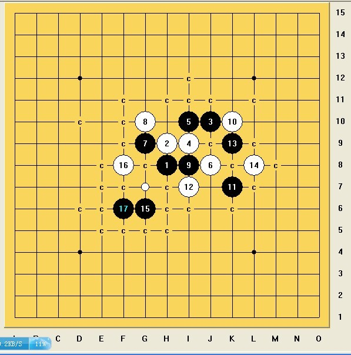

想向大家请教一个疏星15的问题
首页
五子棋交流
#1 想向大家请教一个疏星15的问题 作者：拈棋居 发表时间：2012-5-10 13:09:00
15过后，希望大家分析下局面如果，怎么应对最好，谢谢大家解惑。
昨天晚上对以前走过的三个16稍微拆解了一下。

#2 Re:想向大家请教一个疏星15的问题 作者：山城刀客 发表时间：2012-5-10 16:34:01
这个地毯。
#3 Re:山城刀客【==Re:想向大家请教一个疏星15的问题==】 作者：拈棋居 发表时间：2012-5-10 17:04:12
呃，和我的杀法不同。
#4 Re:想向大家请教一个疏星15的问题 作者：拈棋居 发表时间：2012-5-10 17:33:28
在拆棋过程中遇到一个局面，觉得有意思，大家分享一下，体现冲与不冲四的区别。下棋要细心，呵呵。
#5 Re:想向大家请教一个疏星15的问题 作者：山城刀客 发表时间：2012-5-10 17:35:27
这个15我个人觉得不是太好，黑棋很难在下面拓展出来。
这个不大可能地毯掉。
这个或许可以地毯。
这个也不大可能地毯出来。
其实，换个15或许黑会好走些！
这个局面黑是明显具有优势的。
［ 拈棋居 于 2012-5-10 17:44:02 时花20金币送鲜花一朵］
#6 Re:山城刀客【==Re:想向大家请教一个疏星15的问题==】 作者：拈棋居 发表时间：2012-5-10 17:43:27
嗯，你说的15是老走法了，前天见网高这么走，而且听说地毯，呵呵，好奇拆了下。
#7 Re:想向大家请教一个疏星15的问题 作者：山城刀客 发表时间：2012-5-10 17:56:05
其实这个15和下面疏星一打的8局面同型。
这个局面是不好地毯的。
当然了，13是这样杀的。
至于这个局面，我个人始终认为是不好地毯出来的，或许有高手另辟蹊径地毯也未可知，期待将来有高手分享地毯路线。
［ 拈棋居 于 2012-5-10 18:13:25 时花20金币送鲜花一朵］
#8 Re:山城刀客【==Re:想向大家请教一个疏星15的问题==】 作者：拈棋居 发表时间：2012-5-10 18:12:54
呵呵，同求，谢谢刀客的关注。